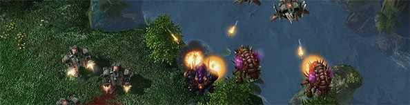

Une leçon de symétrie
L'article original est écrit par Ernest Adams publié par Gamasutra (octobre 1998).
L'auteur original n'est en aucun cas reponsable de la précision de cette traduction.
Les plus observateurs d’entre vous auront pu remarquer que je n’ai pas publié d’article le mois dernier. J’étais en vacances à Oxford, en Angleterre, où j’étudiais l’art, l’architecture, l’histoire et la sociologie de la maison anglaise. Vous vous demandez sans doute pourquoi un développeur de jeux PC voudrait être capable d’expliquer la différence entre décorations baroque et rococo ou pourquoi un libéral voudrait étudier les extravagantes propriétés d’un groupe de gens qui ont vécu des vies de dépenses ostentatoires tandis que les classes ouvrières opprimées trimaient au loin dans la chaleur… Où en étais-je ? Bien, de toute façon, pour faire court, la réponse est que si les développeurs de jeux n’apprennent pas quelque chose de nouveau de temps en temps, la totalité de l’industrie du jeu finira dans le pétrin, voilà pourquoi.

L’une des choses que la Renaissance a apportées à l’architecture anglaise est l’idée classique de symétrie, selon laquelle les bâtiments étaient plus beaux quand le côté gauche était l’image réfléchie du côté droit. Ceci ne constituait pas vraiment une idée nouvelle, mais jusqu’à la Renaissance, les gens n’avaient pas eu trop d’effort à fournir pour l’appliquer à leurs maisons. La symétrie s’applique à toutes sortes de choses en dehors de l’architecture : elle s’applique à la conception artistique, littéraire et même musicale, et elle s’applique de même au jeu vidéo. Ceci est un article sur le rôle de la symétrie dans le game design.
J’ai déjà écrit auparavant sur la façon dont l’équilibre constitue l’essence même du game design. Dans le cas d’un jeu multijoueurs, l’équilibre réside dans la condition fondamentale d’équité, la nécessité que tous les joueurs aient les mêmes chances de gagner au début du jeu. Dans le cas des jeux solos (comme la plupart des jeux vidéo), l’équilibre réside dans le fait que le jeu ne doit être ni trop simple, ni trop difficile.
Le problème est moins celui de l’équité que de celui de fournir un défi et une possibilité de gagner raisonnables. L’un des meilleurs moyens de garantir le bon équilibre d’un jeu multijoueurs au début est de le rendre symétrique, c’est-à-dire, de faire en sorte que tous les joueurs jouent selon les mêmes règles et commencent avec les mêmes ressources. Si vous essayez d’équilibrer les deux côtés d’une balance à plateaux, la façon la plus simple de procéder est de placer les mêmes objets de chaque côté, id est de les placer symétriquement.
Les échecs, les dames, le Monopoly et beaucoup d’autres jeux simples sont symétriques : chaque parti débute avec les mêmes ressources que les autres. Même dans un jeu parfaitement symétrique comme les échecs, il reste un élément d’asymétrie qu’il n’est pas possible d’éviter : quelqu’un doit commencer la partie. Dans beaucoup de jeux, comme le morpion, commencer la partie procure un avantage. Il existe plusieurs façons de réduire l’effet du joueur qui commence la partie. L’une d’entre elles consiste à configurer le jeu de telle sorte que le mouvement initial ne fournisse qu’un très petit avantage stratégique.
Aux échecs, par exemple, les règles du jeu sont faites de telle sorte que vous puissiez uniquement déplacer un pion ou un cavalier au premier tour. Celles-ci sont les deux pièces les plus faibles du jeu, si l’on ne compte pas le roi. Ainsi, l’avantage conféré n’est pas significatif. De plus, les pièces du jeu sont séparées par quatre rangées, si bien qu’aucune pièce seule ne peut prendre ou même véritablement menacer une pièce ennemie au premier tour de jeu. Une autre façon pour réduire l’effet du commencement de la partie est de rendre le jeu suffisamment long, de façon à ce que faire le premier mouvement ne constitue qu’un très petit avantage sur l’ensemble du jeu.
Le morpion est un jeu très court, aussi commencer la partie constitue un avantage extrêmement précieux et celui qui joue deuxième joue habituellement en défensive pour tout le reste du jeu. Pour un jeu plus long comme les dames ou les échecs, cela n’a pas tellement d’importance. Enfin, un jeu peut faire intervenir le hasard pour réduire cet effet du premier tour. Le Monopoly et le backgammon sont des jeux dans lesquels les joueurs lancent des dés pour se déplacer et puisque le premier joueur pourrait très bien faire un mauvais lancer et le deuxième joueur un bon lancer, les déplacements sont beaucoup plus affectés par la valeur du lancer que par autre chose.
Dans les jeux vidéo, le problème de qui commence la partie ne se pose habituellement pas, puisque le nombre des jeux en temps réel a très largement dépassé celui des jeux au tour par tour. Et les quelques jeux basés sur le tour par tour qui existent, comme X-Com, prennent habituellement beaucoup trop longtemps pour que cela fasse une quelconque différence au final. Néanmoins, j’inclus ceci ici car je pense qu’un game designer devrait aussi être capable de concevoir des jeux papier, et il s’agit d’une question importante pour les jeux papier.
Une variante simple de la symétrie que l’on peut trouver dans les échecs, les dames, Stratego ou les autres jeux du genre est la symétrie « de rotation » que l’on trouve dans Rochambeau (pierre-feuille-ciseaux). Dans Rochambeau, deux personnes choisissent au hasard l’une des trois figures suivantes : la pierre, la feuille ou les ciseaux. Le vainqueur est déterminé par la formule suivante : les ciseaux coupent le papier et le battent ; le papier enveloppe la pierre et la bat ; la pierre brise les ciseaux et les bat. Si les deux joueurs ont choisi la même figure, ils recommencent.
Ce mécanisme existait aussi dans un vieux jeu Brøderbund, The Ancient Art of War. Dans ce jeu, les chevaliers avaient l’avantage sur les barbares, les barbares avaient l’avantage sur les archers et les archers avaient l’avantage sur les chevaliers (NdT : c’est aussi ce principe que l’on peut retrouver dans la série Fire Emblem ou dans les simili-échecs de Gemity dans Star Ocean III*). Un élément supplémentaire de ce type de jeu était l’information cachée : le fait que l’un des joueurs ne sache pas laquelle des trois options l’autre joueur va choisir. Ceci aboutissait à plus de psychologie dans un autre jeu où l’information est complète, comme les échecs ou les dames.
Avertissement sur l’asymétrie
Comme je l’ai dit, la symétrie est la façon la plus simple de rendre un jeu équitable, mais elle a tendance à souligner la nature artificielle de la compétition. Les jeux sont souvent plus intéressants et donnent une plus grande sensation de « réel » quand ils contiennent des éléments d’asymétrie. Fox and Geese (NdT : Renard et Oies en français) est un exemple de jeu de plateau très ancien qui contient de l’asymétrie. Dans Fox and Geese, l’un des joueurs contrôle une pièce (le renard) et l’autre en contrôle dix-sept (les oies). Le renard peut se déplacer dans toutes les directions et sauter par-dessus les oies comme aux dames, en les enlevant du plateau. Les oies peuvent uniquement se déplacer vers le renard et ne peuvent pas sauter par-dessus. Les oies gagnent si elles coincent le renard entre elles de façon à ce qu’il ne puisse pas bouger. Le renard gagne s’il saute par-dessus suffisamment d’oies et qu’il n’en reste pas assez pour l’encercler. Les jeux de guerre, qui se présentent souvent comme des simulations d’événements historiques, sont souvent asymétriques parce que les effectifs, l’équipement et les positions sur le terrain sont asymétriques dès le départ. En conséquence, équilibrer un jeu de guerre de façon à ce que chaque joueur ait les mêmes chances de gagner est un défi considérable. Souvent, ceci est atteint en donnant des conditions de victoire différentes à chaque parti (ce que nous avons aussi vu dans Fox and Geese). Dans le cas d’une énorme armée qui assiège une petite garnison, la condition de victoire pour la garnison n’est pas de vaincre l’énorme armée, ce qui est clairement impossible, mais de tenir un certain laps de temps ou un certain nombre de tours. Si l’armée se rend maître de la garnison dans le temps imparti, elle gagne ; sinon, elle perd.
L’un des jeux vidéo asymétriques les plus populaires est Starcraft. Starcraft est un jeu qui nécessite de construire une série de bâtiments à mesure que vous construisez une armée ; ceci se retrouve dans Command & Conquer et Dungeon Keeper. Dans Starcraft, les armées appartiennent à l’une des trois races suivantes : les Terrans, les Protoss et les Zerg. Les fonctions des bâtiments sont relativement semblables d’une race à l’autre, mais l’armement des unités (en particulier celles de haut niveau), leurs coûts de production, leurs mécanismes de production et leur durée de vie sont toutes très différentes.
En général, les unités Protoss sont très fortes mais aussi très coûteuses, alors que les unités Zerg sont beaucoup moins chers et plus faibles, les unités Terran se situant à mi-chemin entre les deux. Les unités Zerg se régénèrent d’elles-mêmes avec le temps ; les unités Terran peuvent être réparées facilement, mais seulement par une unité spéciale de réparation ; les unités Protoss ne peuvent être soignées ou réparées, mais utilisent des boucliers rechargeables pour se défendre. Cette asymétrie a, bien entendu, donné naissance à moult débats sur qui est la meilleure des trois races. Si vous lisez les ajouts à a fin du manuel de jeu, il est clair qu’il y a eu des changements de dernière minute afin d’accentuer les caractéristiques de certaines des races, car quelques unes des fonctionnalités auxquelles le manuel fait référence ne sont pas dans le jeu.
Dans les jeux vidéo, il est plus simple d’équilibrer les éléments asymétriques, car le roulement de dé se fait loin du regard et vous pouvez truquer les probabilités sans que le(s) joueur(s) le sache. Je ne sais pas si cela a été fait dans Starcraft, mais il semble que oui.
Il y a une autre forme de symétrie, ou du moins d’équilibre, à considérer, et c’est l’équilibre entre les différents types de tactique qui permettent à un joueur de gagner le jeu. Les jeux contiennent souvent des erreurs de design qui permettent au joueur d’exploiter une lacune dans les règles pour gagner le jeu en répétant une seule tactique.
Ceci est particulièrement vrai pour les simulations multijoueurs online où intervient un élément économique. Le designer veut et attend que le joueur utilise tout un panel de tactiques, mais en raison d’une erreur de design, une tactique fonctionne tellement mieux que les autres que les joueurs abandonnent toutes les tactiques sauf celle-ci, ce qui rend le jeu plutôt ennuyeux. En général, on veut forcer les joueurs à adopter un panel de tactiques variées pour rendre le jeu plus intéressant. Une simulation de football (NdT : il s’agit de ce qu’on appellerait du football américain, et non pas de « soccer ») professionnel sur laquelle je travaille reproduit naturellement les règles du vrai football. Le football était autrefois un jeu particulièrement symétrique, tout particulièrement quand les joueurs jouaient à la fois en attaque et en défense.
Avec l’avènement de tactiques spécialisées dans l’attaque seule ou dans la défense seule, le jeu est devenu asymétrique, au moins pendant _ — bien sûr, il ne s’agit pas d’asymétrie dans le sens où les deux équipes jouent des règles différentes ou ont des objectifs différents. En conséquence, les règles sont constamment modifiées pour essayer de garder un équilibre entre l’attaque et la défense. De façon similaire, il y a un équilibre entre courir avec la balle et la passer. Dans le football américain professionnel, faire des passes est à peine plus important que courir, mais les équipes doivent maîtriser les deux pour gagner. Les règles du football canadien visent un équilibre différent, qui donne une importance significativement plus grande au jeu de passes et à l’attaque d’une façon plus générale.
Revenons à la maison de campagne anglaise pour quelques minutes : un autre développement intéressant est l’invention du « landscape gardening » (NdT : qui peut se traduire par paysagisme en français, mais fait surtout référence aux jardins « à l’anglaise », par opposition aux jardins « à la française »). Au lieu de concevoir des jardins de fleurs « formels » (et souvent hautement symétriques), des jardiniers comme Lancelot « Capability » Brown ont conçu de véritables paysages de pelouses, de sculptures, de chutes d’eau, de taillis et de petits bâtiments – habituellement des imitations de lieux saints romans. L’un des principes de ses conceptions était la surprise. Suivre un chemin amène à une vue inattendue ou à une statue qui était cachée depuis la maison. Le jardin-paysage encourage – et récompense – le penchant du visiteur pour l’exploration.
C’est un autre principe intéressant à considérer dans le game design. Un parallèle évident est à faire avec les jeux d’aventure, où l’exploration est le cœur du jeu, mais ceci peut aussi bien s’appliquer à d’autres sortes de jeux. Un jeu n’a pas exactement besoin d’avoir la même forme du début à la fin. Une surprise inhabituelle ou un twist inattendu qui surgit à mi-chemin peut ravir, encourager et récompenser le joueur. D’une certaine façon, ceux-ci représentent une asymétrie dans le temps : le début du jeu et sa fin ne sont pas symétriques. Cependant, c’est une épée à double tranchant : il est bon de ne pas changer le style de jeu de façon trop dramatique.
Par exemple, Heart of China commençait comme un jeu d’aventure plus ou moins conventionnel, mais, à partir d’un certain point, se ramenait d’un coup à une simulation 3D de tank assez grossièrement implémentée. Si vous ne réussissiez pas cette épreuve, vous ne pouviez pas continuer l’aventure. C’était très frustrant : si j’avais voulu une simulation de tank, j’aurais acheté une simulation de tank. Par-dessus tout, la surprise, quelle qu’elle soit, devrait coller naturellement au jeu, pour donner l’impression qu’elle en fait partie. La symétrie dans le game design est simple, facile et intuitive, mais elle amène souvent une certaine artificialité, le sentiment « d’être dans un jeu » que nous essayons de nos jours d’éviter. L’asymétrie est un outil très puissant pour générer de l’intérêt et du réalisme, mais elle complique de façon substantielle le design et la conception d’un jeu. Usez en avec soin.